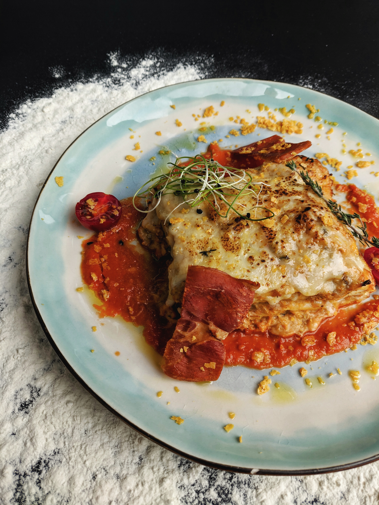

Lasagna Recipe

Description
Ingredients
- 1 (16 ounce) package lasagna noodles
- 1 pound lean ground beef
- salt and pepper to taste
- 1 (16 ounce) jar spaghetti sauce
- 1 clove garlic, minced
- ½ pound shredded mozzarella cheese
- ½ pound shredded Cheddar cheese
- 1 pint ricotta cheese
-
Bring a large pot of lightly salted water to a boil. Add pasta and cook
for 8 to 10 minutes or until al dente; drain.
-
Bring a large pot of lightly salted water to a boil. Add pasta and cook
for 8 to 10 minutes or until al dente; drain.
-
In a medium bowl, combine mozzarella, Cheddar and ricotta; stir well. In
9x13 inch pan, alternate layers of noodles, meat mixture and cheese
mixture until pan is filled.
-
Bake in preheated oven for 30 minutes, or until cheese is melted and
bubbly.